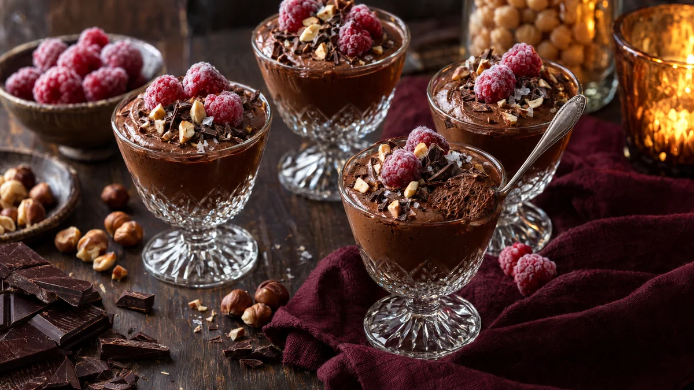

RESTFEST · RECEPTDessert
Chokladmousse på kikärtsspad med frostiga hallon
Spadet från en burk kikärtor och en kaka mörk choklad. Spadet vispas fluffigt som äggvita och blir en luftig, sidenlen mousse där smaken av kikärtor försvinner helt. Ingen skulle gissa att den är vegansk. Den serveras i små glas med frysta hallon, rostade hasselnötter och några flingsaltkorn.
- Förberedelse
- 20 min + minst 3 tim i kylen
- Tillagning
- 5 min
- Portioner
- 4
- Nivå
- Medelsvårt
 Det här behöver du
Det här behöver du
Tryck på + vid det du behöver köpa.
Mousse
Till servering
Gör så här
- Häll av kikärtorna i en sil över en ren skål och spara spadet. Det ska bli ca 1 dl. Kikärtorna kan du rosta eller göra hummus av.
- Hacka chokladen och smält den i en skål över en kastrull med sjudande vatten. Rör tills den är slät och låt den svalna till ljummen, ca 30–35 grader. Är den för varm faller skummet ihop, är den för kall stelnar den i klumpar.
- Vispa spadet och citronsaften med elvisp på högsta hastighet i 3–5 minuter, tills det är vitt och fluffigt. Skålen och vispen måste vara helt fria från fett.
- Tillsätt socker och vaniljsocker lite i taget och vispa 3–5 minuter till, tills skummet står i fasta, blanka toppar.
- Rör ner en tredjedel av skummet i chokladen med en slickepott, så att chokladen blir lösare. Vänd sedan försiktigt ner resten i två omgångar, tills inga vita strimmor syns. Vänd ner saltet.
- Fördela moussen i 4 små glas eller koppar. Kyl i minst 3 timmar, gärna över natten, tills den har stelnat.
- Rosta hasselnötterna i en torr stekpanna på medelvärme i 4–5 minuter. Gnid av skalen i en kökshandduk och hacka nötterna grovt.
Dekoration och servering
- Lägg några frysta hallon på varje mousse precis före servering, så att de är frostiga och vita på ytan.
- Strö över hasselnötter, några flingsaltkorn och lite riven choklad.
- Servera i små glas, kaffekoppar eller kristallskålar, gärna olika modeller.
- Moussen är mäktig, så små portioner räcker.
Mått och ugnstemperaturer
Måtten är svenska (dl, msk, tsk, krm). Ugnstemperaturerna gäller vanlig ugn med över- och undervärme; med varmluft, sänk med 20 grader.